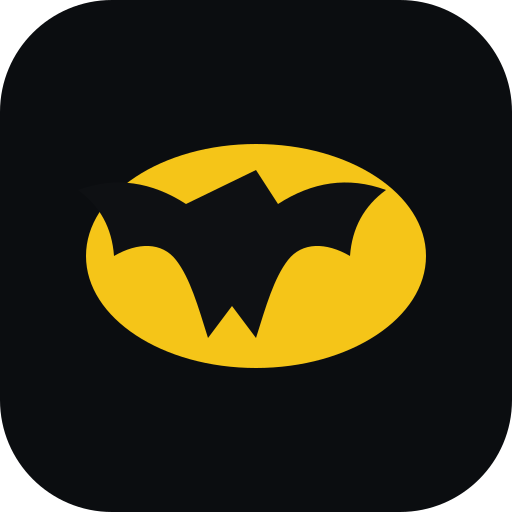

محاضرات batman
الإعدادات
المفتاح من aistudio.google.com/apikey. يُحفظ في متصفحك فقط. المقطع الأقصر يعطي ردوداً أسرع، والأطول ملخصاً أدق.
00:00
بعد الضغط اختر تبويب Teams (افتح Teams من المتصفح) وفعّل «مشاركة صوت التبويب». الفيديو لا يُسجَّل ولا يُرسل، الصوت فقط.